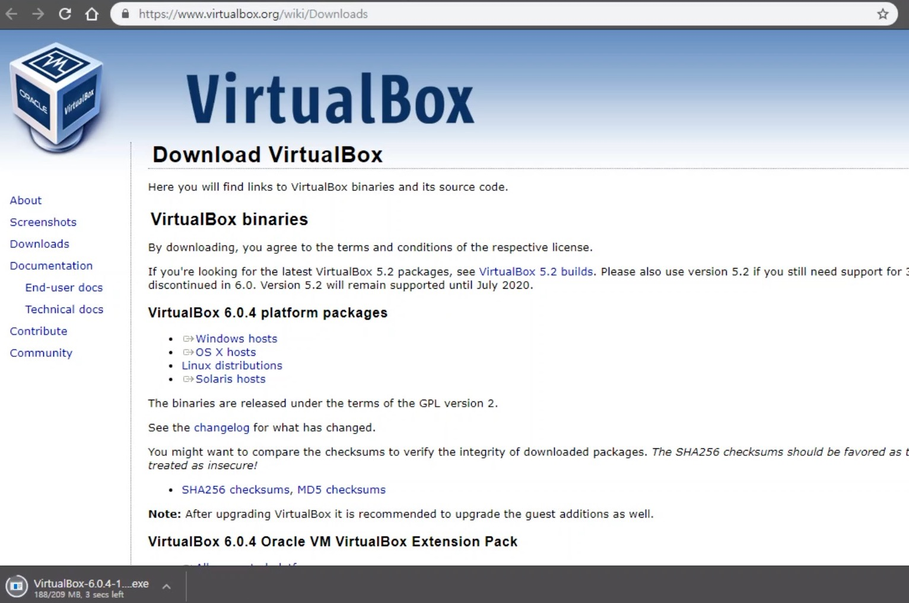
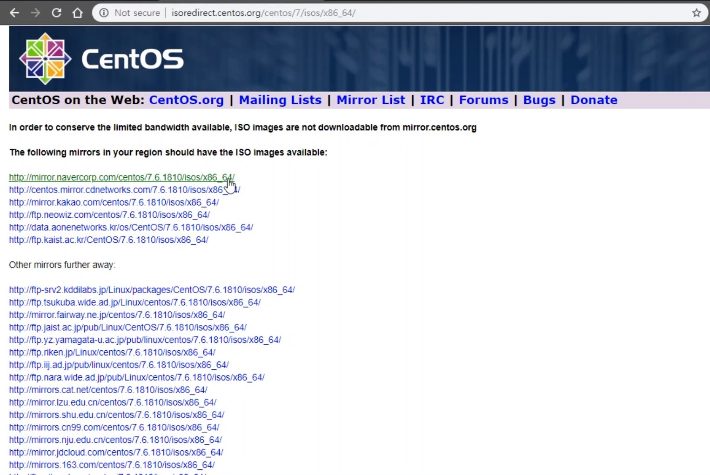
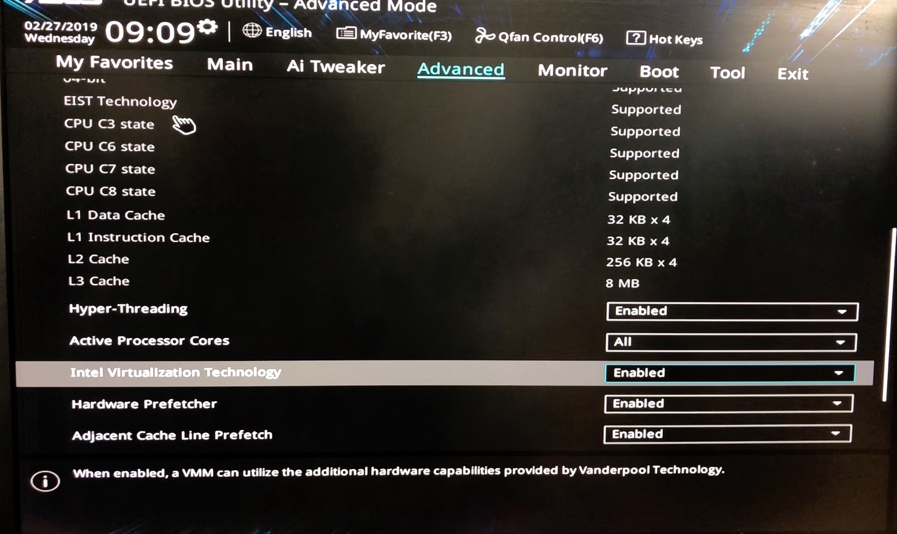
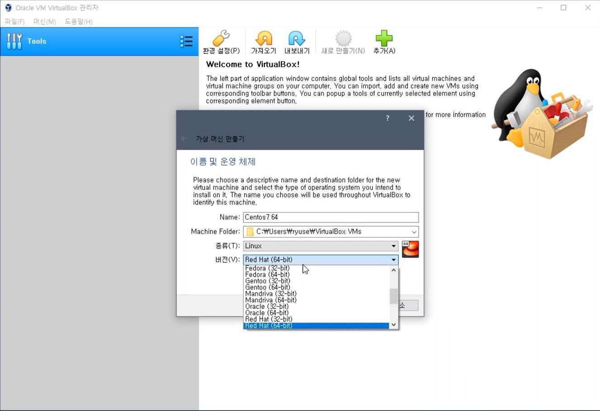
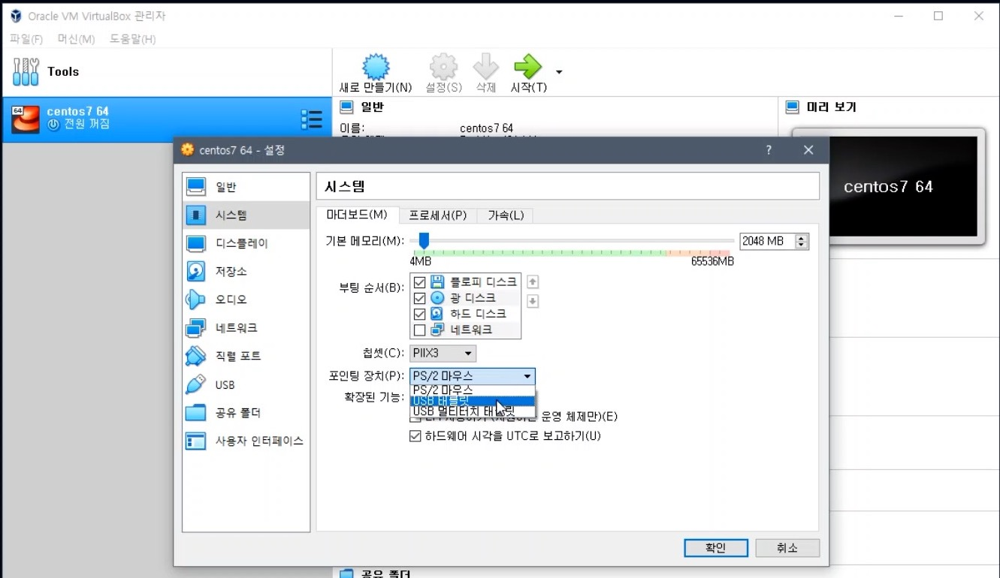

Setup CentOS 7 in VritualBox
환경
- Windows 10 x64
- ASUS BIOS
준비물
Download VirtualBox
버추얼박스를 다운로드합니다.

Download CentOS 7 ISO
최신 iso파일을 미러사이트에서 다운로드합니다.
- CentOS Download Page
- 파일이름 참고: CentOS-7-x86_64-DVD-1810.iso

VirtualBox에 CentOS 7 새로 만들기
VirtualBox에 CentOS 7을 생성하기 위해 다음 과정을 진행합니다.
- Install VirtualBox
- BIOS Setting에서 Advanced > Intel Virtualization Technology 설정을 Enabled로 변경
 - VirtualBox 실행
- VirtualBox -> 새로 만들기
- Name: Centos7 64
- 종류: Linux
- 버전: Red Hat(64-bit)

- 새로 만든 Centos7을 실행하기 전에 다음을 설정합니다.
- Centos7 설정에서 시스템 -> 포인팅 장치 -> USB태블릿 으로 변경합니다.
 - VirtualBox 설정에서 입력 -> 호스트 키 설정 -> Ctrl + Alt 로 변경합니다.
- Centos7 설정에서 시스템 -> 포인팅 장치 -> USB태블릿 으로 변경합니다.
- Centos7을 ‘시작’합니다.
CentOS 7 셋업하기
CentOS 셋업 설정을 진행합니다.
- Install CentOS 7
- Language: English / English
- Date & Time: Seoul
- Begin Installation
- Root Password 설정
- User Creation 아이디와 패스워드 설정. 관리자 아님.
- Reboot
- Login: User Name & Password